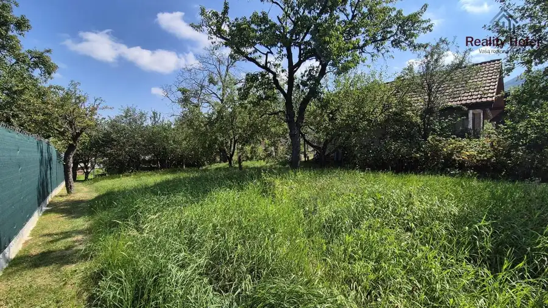
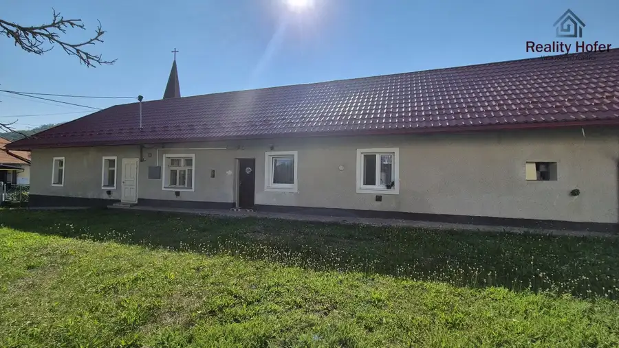
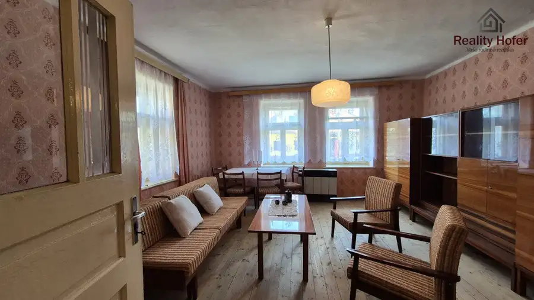
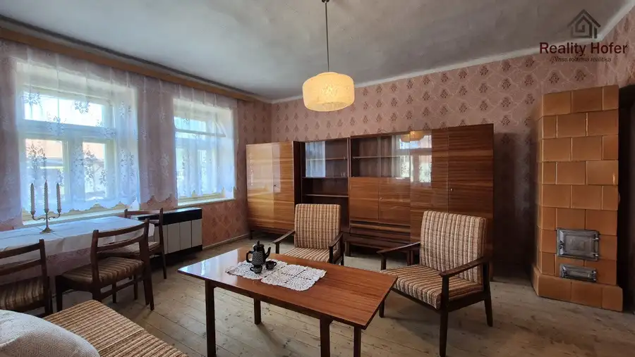
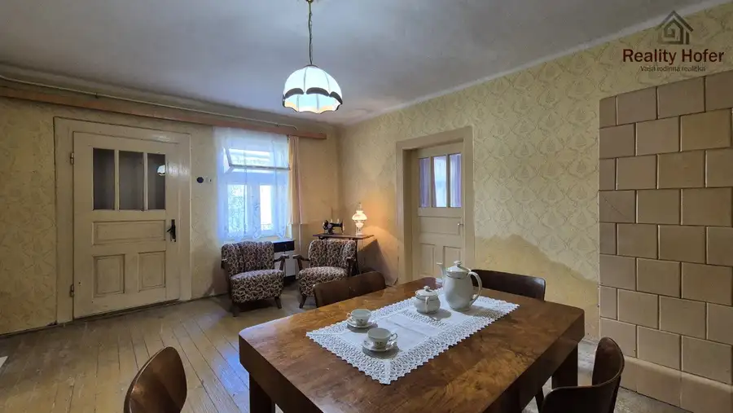
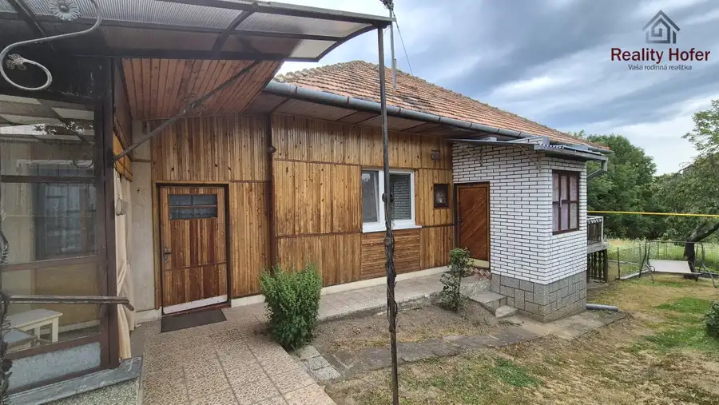
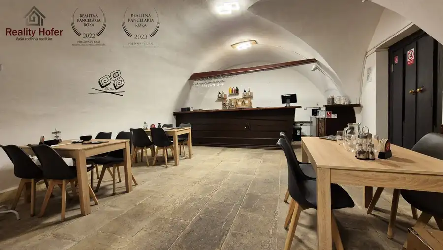
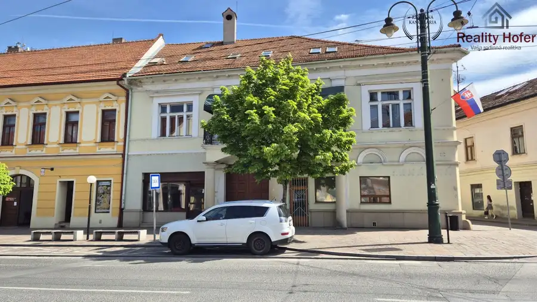

Veľký pozemok v centre obce Podhradík, 15 min. od Prešova
Podhradík





- Plocha1717 m²
- VlastníctvoOsobné
O nehnuteľnosti
Reality Hofer ponúka na predaj nádherný veľký pozemok v centre obce Podhradík, 15 minút od Prešova. Pozemok je rovinatý o veľkosti 1717 m2. Je prístupný z oboch strán, takže polovicu môžete odpredať alebo využiť na výstavbu ďalšieho domu so samostatným vstupom. Je kompletne oplotený. Záhrada bola využívaná ako ovocný sad. komplet IS - elektrina, plyn, vodovod, kanalizácia, studňaNa pozemku sa nachádza pôvodný gazdovský dom a samostatná stavba - letná kuchyňa s garážou a pôjdom. Dom má vidiecky vzhľad - pôvodné drevené zárubne a dvere (futrá), 3x funkčná kachľová pec v izbách, 2x kachľová pec v kuchyni a letnej kuchyni, pôvodné drevené dvojité okná s ozdobnými prvkami.Dom je prízemný, v pôvodnom stave, s novou plechovou strechou (2014) . Vyžaduje rekonštrukciu, odizolovanie vlhkosti alebo kompletnú prestavbu.Dispozícia: v prednej časti domu je vstupná chodba, kuchyňa, 3 x izba, kúpeľňa, WC, špajza, v zadnej časti domu je hospodárska časť pôvodne využívaná ako maštaľ Poloha v centre obce zaručuje vďaka kamerovému systému bezpečnosť. V blízkosti obecný úrad, zastávka MHD, kostol.Obec Podhradík ponúka spojenie pokojného vidieckeho bývania a výbornej dostupnosti MHD do Prešova. V samotnej obci je MŠ, kostol, detské ihriská a oddychové zóny. Nad obcou sa vypína zrúcanina hradu Šebeš využívaná na kultúrne akcie a turistiku. Okolitá príroda Slánskych vrchov poteší každého, kto má rád prechádzky v lese, hubárčenie, či turistiku.V cene kompletný právny servis a úhrada katastrálnych poplatkov spojených s prevodom. V prípade kúpy na hypotéku odporúčame pre zjednodušenie celého procesu využiť služby nášho hypotekárneho špecialistu, ktorý vám vybaví hypotéku v ktorejkoľvek banke podľa vašej preferencie.Viac informácií alebo obhliadku priamo na mieste získate od nášho makléra na čísle 0905 717 775 alebo mailom na hofer@realityhofer.sk
Parametre
- Druh
- Pozemok pre rodinné domy
- Dátum zverejnenia
- 12. 08. 2026
- Plocha pozemku
- 1717 m²
- Terén pozemku
- Rovinatý
- Typ
- Predaj
- Vlastníctvo
- Osobné
Kde to je


Mohlo by Vás zaujímať

DomNové 100 000 €Starší rodinný dom, pozemok 918m2, Hermanovce, okr. Prešov Hermanovce 918 m²
Komerčné priestoryNové 25 000 €Odstúpenie prevádzky reštaurácie v centre, Hlavná, Prešov Prešov 200 m²
DomNové 1 100 000 €Meštiansky dom na Hlavnej, Prešov Prešov 618 m²